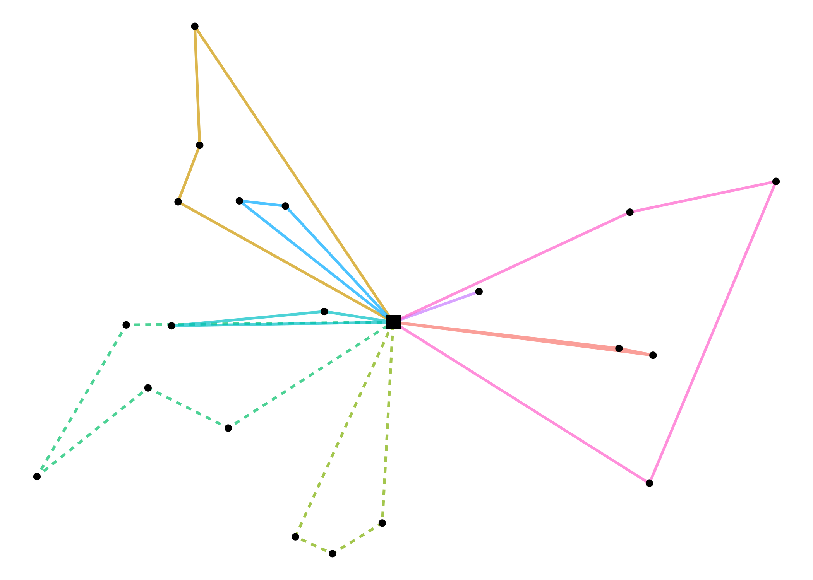
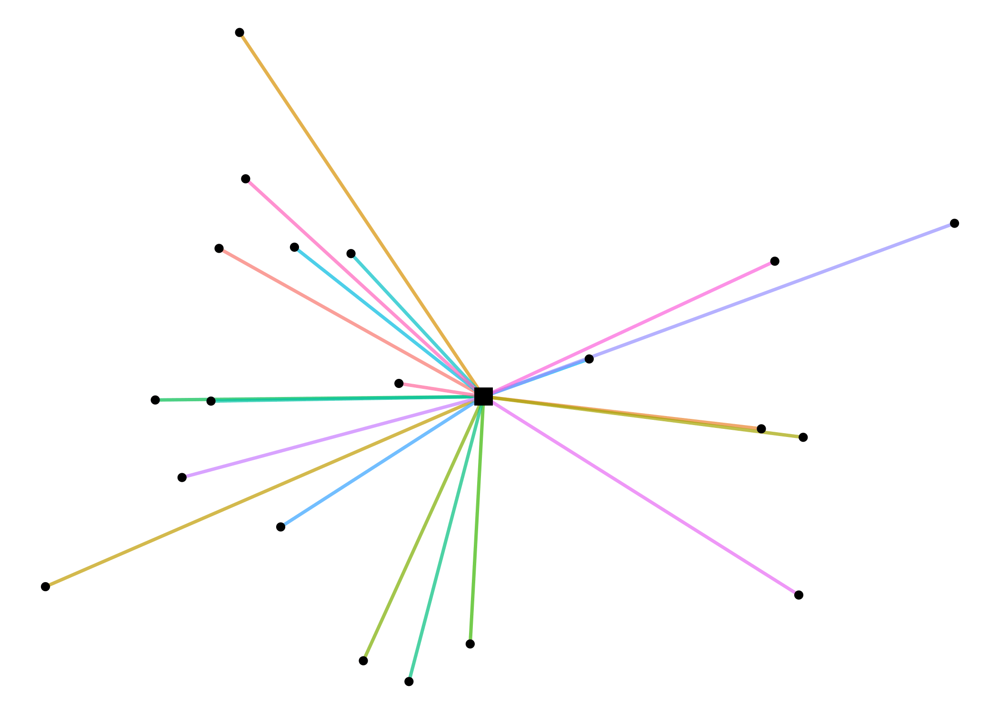
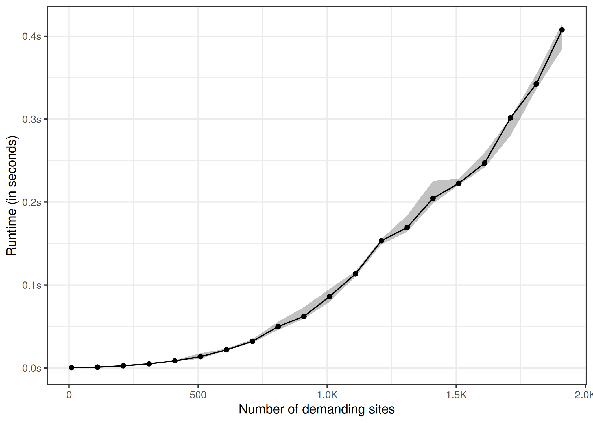

heumilkr provides an implementation of the Clarke-Wright algorithm (Clarke and Wright 1964) to find a quasi-optimal solution to the Capacitated Vehicle Routing Problem. It is available as an R package and as a Python package, which share the same C++ core.
Besides deliveries, it also supports “backhaul”: sites with negative demand have goods picked up and brought back to the depot, in any order within a run as long as the load stays within the vehicle capacity.
For a fixed number of vehicle types, the run time grows at best quadratically and at worst cubically with the number of sites . On the problems we tested with randomly placed sites and up to 4000 sites, it grew roughly like to , and roughly like if a limited vehicle type repeatedly runs out (see Runtime Benchmarks).
Installation
R
You can install the latest CRAN release of heumilkr with:
install.packages("heumilkr")Alternatively, you can install the development version of heumilkr from GitHub with:
# install.packages("devtools")
devtools::install_github("lschneiderbauer/heumilkr")Python
You can install the latest PyPI release of heumilkr with:
Alternatively, you can install the development version of heumilkr from GitHub, which requires a C++ compiler, with:
The only dependency is NumPy. Install heumilkr[pandas] to also get pandas for Solution.to_pandas().
Example
R
The following example generates random demands at random locations, defines two vehicle types, applies the Clarke-Wright algorithm to generate quasi-optimal vehicle runs, and shows the resulting vehicle run solution.
library(heumilkr)
set.seed(42)
# generating random demand
demand <- runif(20, 5, 15)
# generating random site positions
positions <-
data.frame(
pos_x = c(0, runif(length(demand), -10, 10)),
pos_y = c(0, runif(length(demand), -10, 10))
)
solution <-
clarke_wright(
demand,
dist(positions),
# We have an infinite number of vehicles with capacity 33 available,
# and two vehicles with capacity 44.
data.frame(n = c(NA_integer_, 2L), caps = c(33, 44))
)
print(solution)
#> $runs
#> run vehicle max_load distance
#> 1 0 0 25.78821 16.929475
#> 2 1 0 31.75943 29.029139
#> 3 2 1 34.12677 20.601801
#> 4 3 1 41.60558 30.176394
#> 5 4 0 22.65398 14.329082
#> 6 5 0 21.76854 14.231704
#> 7 6 0 14.34672 6.043174
#> 8 7 0 30.58007 36.895550
#>
#> $sites
#> site demand
#> 1 0 14.148060
#> 2 1 14.370754
#> 3 2 7.861395
#> 4 3 13.304476
#> 5 4 11.417455
#> 6 5 10.190959
#> 7 6 12.365883
#> 8 7 6.346666
#> 9 8 11.569923
#> 10 9 12.050648
#> 11 10 9.577418
#> 12 11 12.191123
#> 13 12 14.346722
#> 14 13 7.554288
#> 15 14 9.622928
#> 16 15 14.400145
#> 17 16 14.782264
#> 18 17 6.174874
#> 19 18 9.749971
#> 20 19 10.603327
#>
#> $visits
#> run site order load
#> 1 1 0 2 0.000000
#> 2 0 1 0 11.417455
#> 3 1 2 0 23.898031
#> 4 3 3 1 21.954433
#> 5 0 4 1 0.000000
#> 6 2 5 0 23.935806
#> 7 2 6 2 0.000000
#> 8 3 7 0 35.258910
#> 9 2 8 1 12.365883
#> 10 4 9 0 10.603327
#> 11 5 10 0 12.191123
#> 12 5 11 1 0.000000
#> 13 6 12 0 0.000000
#> 14 3 13 3 0.000000
#> 15 7 14 1 6.174874
#> 16 3 15 2 7.554288
#> 17 7 16 0 15.797802
#> 18 7 17 2 0.000000
#> 19 1 18 1 14.148060
#> 20 4 19 1 0.000000
# returns the total cost / distance
# (the quantity that is minimized by CVRP)
print(milkr_cost(solution))
#> [1] 168.2363
# returns the savings resulting from the heuristic optimization procedure
print(milkr_saving(solution))
#> [1] 168.7352The R package has a built-in plotting function (using ggplot) for the result. The individual runs are distinguished by color. The site locations are marked with round circles while the depot is depicted as a square. The line types (solid/dashed/…) are associated to different vehicle types.
plot(solution)
Python
The following example solves a small problem with a fixed set of demands and distances, applies the Clarke-Wright algorithm to generate quasi-optimal vehicle runs, and shows the resulting vehicle run solution.
import heumilkr as hm
solution = hm.clarke_wright(
demand=[3, 2, 4, 2],
# distances between all locations, the first one is the depot
distances=[
[0, 1, 1, 2, 3],
[1, 0, 2, 1, 2],
[1, 2, 0, 3, 4],
[2, 1, 3, 0, 1],
[3, 2, 4, 1, 0],
],
# one vehicle with capacity 6, and an unlimited number with capacity 9
vehicles=[hm.Vehicle(capacity=6, count=1), hm.Vehicle(capacity=9)],
)
for run in solution.runs:
print(run)
#> Run(id=0, vehicle=1, sites=(0, 2, 3), loads=(6.0, 2.0, 0.0), distance=6.0, max_load=9.0)
#> Run(id=1, vehicle=0, sites=(1,), loads=(0.0,), distance=2.0, max_load=2.0)
# returns the total cost / distance
# (the quantity that is minimized by CVRP)
print(solution.cost())
#> 8.0
# returns the savings resulting from the heuristic optimization procedure
print(solution.saving())
#> 6.0How the Algorithm Works
The following animation, made with the R package, shows how the Clarke-Wright algorithm iterates to arrive at its final solution:

Runtime Benchmarks
The benchmarks were taken on an Intel® Xeon® CPU E3-1231 v3 @ 3.40GHz CPU, through the R package using bench. The solver itself is the same C++ code in Python, but converting inputs and results adds some overhead that differs between the two packages.
The following graph shows the run time on one kind of problem: uniformly distributed random sites, demands between 5 and 15 and a vehicle capacity of 33. It amounts to for , for , and for . Run times can differ for other problems.

Documentation
The two packages have separate documentation sites:
- R package: website with the function reference and the articles.
- Python package: API reference.
Feature Differences
Both packages include the solver with all its options (backhaul, vehicle types and restrictions) and calculate the cost and savings of a solution. The following is only part of the R package:
- plotting a solution,
- downloading and solving CVRPLIB instances,
- the performance vignette, although its results also apply to the Python package, since they measure the shared solver.